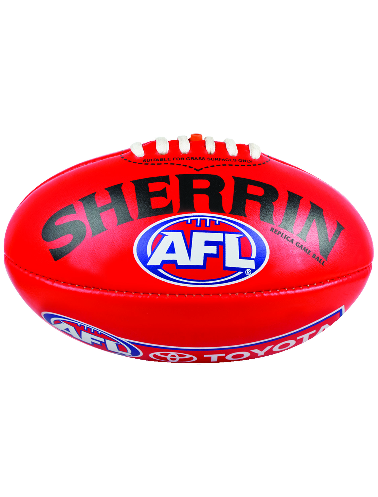
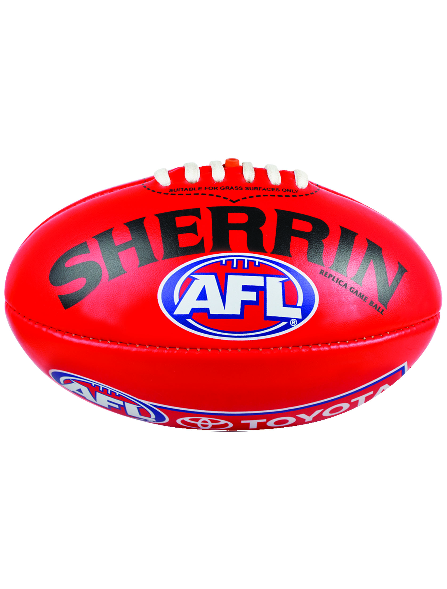

Home
About Me
Hey! the name is Luke Baker, my friends refer to me as Baker but both are fine.
I'm a first year Uni student and graduated from high school last year. I chose to study Information Technology at RMIT because of the facilities and opportunities RMIT has to offer and feedback I heard from former students.
In my spare time I enjoy playing and watching basketball and footy, hanging out with friends and watching videos or series
 


Interest in IT
What is your interest in IT? When did your interest in IT start?
My interest in IT started from a young age when I just started playing my first video games. It gradually grew overtime and started to think about how the games are made logically. This gave me deeper motivation and inspiration to learn more about the IT world and what goes on to make it as good as it really is.
Was there a particular event or person that sparked your interest?
An event that sparked my interest was when I obtained my first gaming device of the D2S and I would play it for ages, My peek interest hit when I was playing FIFA and I was left wondering how they made the game work and the behind the scenes of it. Also Michael Reeves made it very interesting
Why did you choose to come to RMIT? • What do you expect to learn during your studies?
I chose to study at RMIT because I heard that it was one of the best uni’s for learning about IT and chose to come and try and get the best out if it. I’d like to gain more knowledge about how IT works and how things are created.